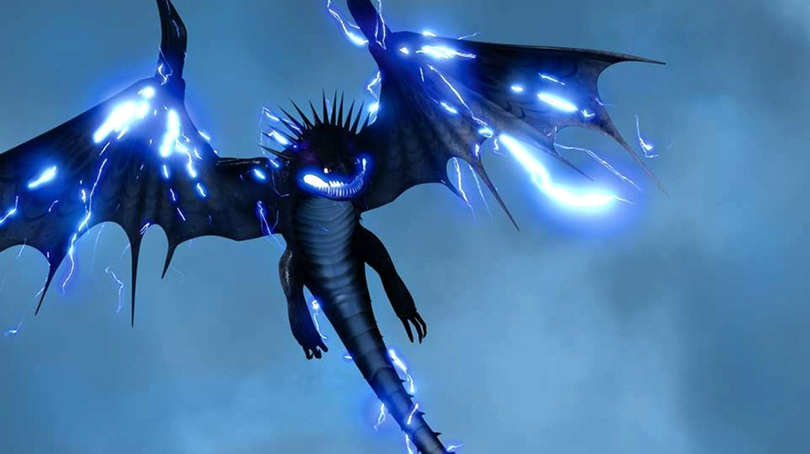

Night Fury
The storm has a shape, and the shape has teeth — lightning given wings, and the last of its kind learning he was never alone.

Night Fury
The storm has a shape, and the shape has teeth — lightning given wings, and the last of its kind learning he was never alone.
Feature map
Level-by-level features, as the figure refined them. The log is kept by watching the sky, not the dragon.
Plasma Blast
Action · 1 or 3 CE · 120 ft, choose a mode.
Concussive (1 CE): make a ranged CE attack against a creature; on a hit, 2d10 force damage and the target is pushed 10 ft away from you. Explosive (3 CE): choose a point within range; each creature in a 20-ft radius makes a DEX save against your CE save DC, taking 3d10 fire damage on a failure or half as much on a success. The night has two voices: the knock and the thunder.
Night Fury Cloak
Passive · while flying in dim light or darkness.
While you are flying in dim light or darkness, attack rolls against you have disadvantage, and you may take the Hide action as a bonus action. The sky at night is not empty. It is occupied — by him.
Echolocation
Passive.
You have blindsight out to 60 ft. You cannot be surprised while you are conscious, and you can perceive through nonmagical obscurement such as fog, foliage, and mundane darkness. He clicks, and the world answers back in shape.
Lightning-Rider
Bonus action · 5 CE or 1/long rest · 1 minute.
You wreathe yourself in channeled lightning for 1 minute. While wreathed: any creature that hits you with a melee attack takes 2d8 lightning damage; your Plasma Blast deals an extra 1d8 lightning damage; and your flight speed increases by 20 ft. You may activate this once per long rest without spending CE, or by spending 5 CE. The storm does not strike him. The storm carries him.
Alpha's Command
Action · 4 CE · 60 ft.
Choose any number of dragon-type creatures within 60 ft. Each must make a WIS save against your CE save DC; on a failure, it follows your simple spoken commands for 1 minute, repeating the save at the end of each of its turns. Commands cannot force a creature to harm itself. The alpha does not shout. The alpha is simply obeyed.
Stormcall
Action · 4 CE · requires Lightning-Rider or a natural storm.
You call the sky down. Choose a point within 120 ft: each creature in a 20-ft radius makes a DEX save against your CE save DC, taking 5d10 lightning damage on a failure or half as much on a success. You must have Lightning-Rider active or be beneath a natural storm to use this. He learned the sky's language by flying through it. Now he speaks it.
He Who Drinks the Sky
Passive.
Lightning is no longer weather to you — it is food. When you would take lightning damage, you instead regain hit points equal to half the damage dealt. Lightning-Rider is no longer limited to once per long rest; you may activate it by spending 5 CE any number of times. In the storm above the Hidden World, he opened his wings and drank.
Maximum, Domain, or equivalent.
Capstone material. He carries no Domain — the whole sky is already his, and a Domain would only be smaller.
Lightning's Heir
You climb into the storm and come back as its heir. For 1 minute: you gain immunity to lightning damage; your flight speed doubles; your Plasma Blast deals an extra 2d8 lightning damage and its explosive radius becomes 30 ft; and Stormcall costs no CE. Once during the transformation, you may make the Lightning Dive: fly up to your flight speed in a straight line — each creature within 10 ft of your path makes a DEX save against your CE save DC, taking 8d10 lightning damage on a failure or half as much on a success — then land in a thunderclap, and each creature within 20 ft of where you land must make a STR save or be knocked prone. The Hidden World watched its king fall from the sky like a verdict.
King of Dragons
The last Night Fury is the first king. Alpha's Command now affects beasts as well as dragon-type creatures, its range becomes 120 ft, and creatures commanded by you have advantage on attack rolls while they can see you. Once per long rest, you may issue a single command that every dragon within 1 mile hears: each must make a WIS save against your CE save DC or obey it as if under Alpha's Command. He was the last of his kind. He became the first of something else.
Build-defining options.
These are optional character-building feats. You must meet each listed prerequisite before selecting it.
Off the Cliffside
The blast does not need a straight line. When you fire a concussive Plasma Blast, you may ricochet it off one solid surface: the attack ignores half and three-quarters cover, and you may target a creature you cannot see as long as you know its location. The cliffs of Berk taught him geometry.
Death from the Dark
The cloak is not for hiding — it is for arriving. While you are hidden by your Night Fury Cloak, if you fly at least 30 ft in a straight line toward a creature and then attack it, the attack is made with advantage and deals an extra 2d10 force damage on a hit. The dive is the sentence; the dark is only the punctuation.
The Click That Maps
One long click, and the dark draws itself. As an action (1 CE), you emit a mapping pulse: you learn the layout of structures, passages, and secret doors within 120 ft, and the locations of hidden creatures there, for 1 minute. This does not make hidden creatures visible — but you know exactly where every one of them is standing.
The Alpha's Mercy
Command is not the alpha's only voice. You may use Alpha's Command to broker peace instead of obedience: each dragon or beast of your choice within 60 ft must make a WIS save against your CE save DC or have the charmed and frightened conditions end, and it cannot willingly attack another dragon or beast for 1 minute. The king's first decree was a truce.